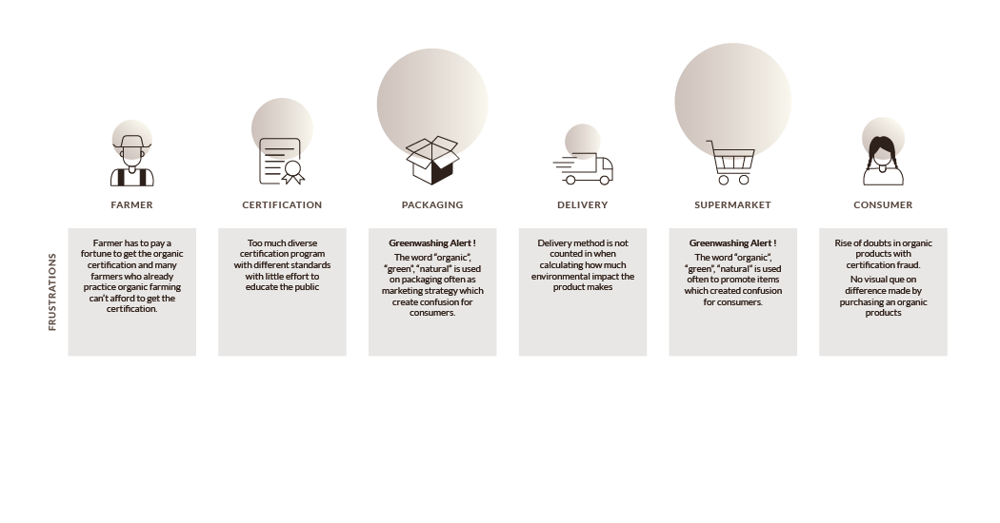
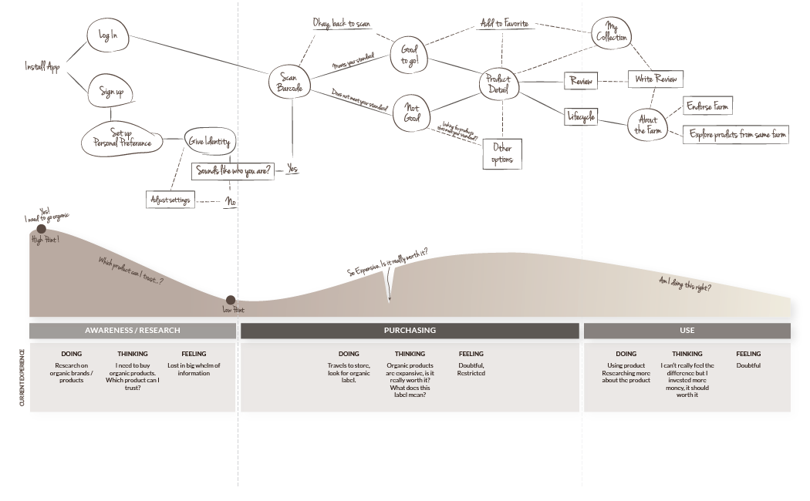

<!DOCTYPE html>
<html>
  <head>
    <meta charset="utf-8">
    <title> Ashley Kim : Smart Organic </title>
    <link rel="shortcut icon" href="img/favicon.ico" type="image/x-icon">
    <link href="css/work2.css" rel="stylesheet">
    <link href="https://fonts.googleapis.com/css?family=Alice|Lato:100,300,400,900" rel="stylesheet">
  </head>
  <body>
    <header>
      <nav>
        <ul>
          <li><a href="mainpage.html">Home</a></li>
          <li><a href="mainpage.html#work">Work</a></li>
          <li><a href="mainpage.html#contact">Contact</a></li>
        </ul>
      </nav>
    </header>
    <main id="up">
      <section class="maintitle">
        <h1> Smart Organic </h1>
        <p class="subtitle">Organic Standard Customized to Your Lifestyle</p>
        <div class="intro_pic">
          
        </div>
      </section>
  <!--0 OBJECTIVE --------------------------------->
      <section>
        <p class="SectionTitle"> Problem & Objective</p>
        <p class="work_desc">The hype with organic products rised quickly over the years but several incidents in certification fraud has brought debate on wether current system is trustworthy. With this doubtful mind, organic consumers remain as a finicky group.
          Smart Organic empower consumers with transparent data on organic product’s lifecycle and craft personalized organic standard based on one’s lifestyle.
        </p>
        <div class="objective_pic"></div>
      </section>
      <section class="design_process">
        <p class="SectionTitle"> Design Process</p>
  <!--1 INDUSTRY DYNAMIC --------------------------->
        <div class="v_line"></div>
        <div class="Number_circle"> 1 </div>
        <p class="sub_section"> Investigate Current Industry Dynamic</p>
        <p class="sub_sectionsub">Find opportunities grow & define where we want to get to</p>
        <p class="work_desc"><span class="bold">“Activate blockchain supply chain”</span>
          The current industry has product’s lifecycle hidden under distributer’s marketing strategy,
          giving the industry planty of space to “greenwash” their product. Activating blockchain
          technology through out the lifecycle of a product will minimize the confussion.
          Also, blockchain supply chain will reduce the cost of getting an organic certification
          which will encourage more farms to get involved.</br></br>
          <span class="bold">“Reveal the farmers”</span>Better to see something once, than to hear about it a thousand times.
          By creating new dynamic between farmers and consumers, the public will learn to further appreciate the actual ingredients
          beyond the brand which will elongate consumers habit on organic lifestyle.
        </p>
        <div class="index2">
          <figure>
            
            <figcaption>New Industry Dynamic with Smart Organic</figcaption>
          </figure>
        </div>
        <div class="index1">
          <figure>
            
            <figcaption>Current Industry Dynamic</figcaption>
          </figure>
        </div>
        <div class="work_graphic"></div>
        <div class="work_graphic2"></div>

  <!--2 USERSCAPE --------------------------------->
        <div class="v_line"></div>
        <div class="Number_circle"> 2 </div>
        <p class="sub_section"> Map Out a User-scape</p>
        <p class="sub_sectionsub">Learn current user demographic & create a user scenario</p>
        <p class="work_quote">
          "We live in an age of transparency where consumers have a heightened interest in the food they eat.
           We want consumers to love and feel good about the products they buy from us, and to trust that
           they are sourced responsibly and ethically.“
        </p>
        <p class="work_quote_name">
          Kathlyne Ross, Vice President, Food Product Development, Loblaw Companies Ltd.</span>
        </p>
        <div class="work_graphic"></div>
        <div class="work_quote_pic"></div>

        <p class="work_desc">
          Based on user demographic research, Smart Organic synthesized user’s organic lifestyle into 5 different motivations : </br></br>
          <span class="bold">Chemical Fighter</span> is all about avoiding exposure to chemicals and synthetic materials</br>
          <span class="bold">Localizer</span> specifically looking for locally grown or produced products</br>
          <span class="bold">Organic Fanatic</span> wants everything organic, cautious about nutrition the most</br>
          <span class="bold">Forest Lover</span> focuses on minimizing envrionmental footprint</br>
          <span class="bold">Botanic Hippie</span> craves the idea of being organic to be cool and selective on areas to be organic
        </p>
        <div class="work_graphic_scenario"></div>
<!--3 EXPERIENCE --------------------------------->
        <div class="v_line"></div>
        <div class="Number_circle"> 3 </div>
        <p class="sub_section"> Create a new Experience</p>
        <p class="sub_sectionsub">Spot areas to improve & highlight new features to design</p>
        <p class="work_desc">
          The ultimate experience of <span class="bold"> Smart Organic</span> is to make users feel confident on their organic lifestyle and crave to improve their habits. </br></br>
          The experience should be like growing a virtual character of self. It should give constant visual feedback on their progression.It should speak in easy language and educate on organic practices.
          It should not make user feel constraint on their exploration.It should not make...</br></br>
          The experience dynamic will change as following :
        </p>
        <div class="index2">
          <figure>
            
            <figcaption>New Experience</figcaption>
          </figure>
        </div>
        <div class="index1">
          <figure>
            
            <figcaption>Current Experience</figcaption>
          </figure>
        </div>
        <div class="work_graphic"></div>
        <div class="work_graphic2"></div>
        <p class="sub_sectionsub2">Wireframe</p>
        <div class="work_graphic"></div>
<!--5 UI --------------------------------------->
        <div class="v_line"></div>
        <div class="Number_circle"> 5 </div>
        <p class="sub_section">Visual Decisions</p>
        <p class="sub_sectionsub">Digital Graphic Guide & Prototype</p>
        <div class="work_graphic"></div>
        <div class="work_graphic"></div>
      </section>
<!-- GO UP ------------------------------------->
      <div class="arrow">
        <a href="work2.html#up"><i></i><p>Go Up</p></a>
      </div>
    </main>
    <footer>
      Copyright © 2018 Ashley Kim
    </footer>
  </body>
</html>
